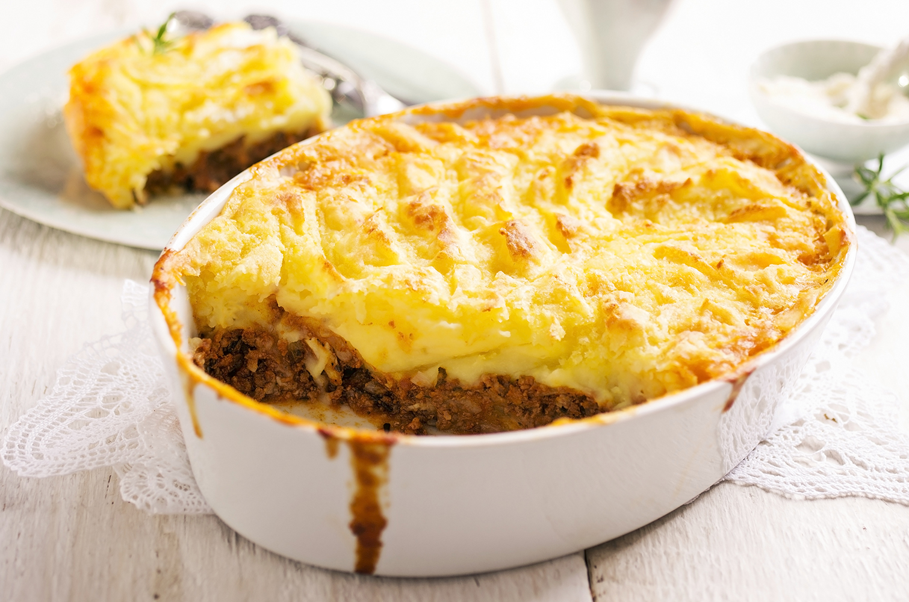

Escondidinho

Escondidinho
Ingredients
- Potatoes - 2.205 oz.
- 1 lb. of ground beef
- 1/2 lb. of mozzarella cheese
- Olive oil to taste
- 1 onion
- 1 garlic clove
- Pinch of salt to taste
- Pinch of parsley to taste
- 1/2 cup of milk
- 3 tsp of butter
- 1/2 jar of tomato sauce
Instructions
Making Mashed Potatoes
- Boil the potatoes in a pot of hot water until they become soft (about 20 minutes)
- Put potatoes in a mixing bowl and smash them.
- Mix in the butter with potatoes.
- Add the milk.
- Once the ingredients are mixed together (becomes a paste), set aside.
- Preheat the oven to 350 degrees Fahrenheit to be ready in 10 minutes.
Making the Ground Beef
- Mince the garlic clove and the onion separately.
- Heat a pan on the stove and add the olive oil, then the minced clove, and finally the minced onion while stirring the ingredients.
- Add the ground beef, the parsley, and the tomato sauce. Mash the ground beef while mixing in the ingredients.
- Once the beef is booked (brown) then it is ready.
Constructing the Shepherd's Pie
- In a casserole dish, put the olive oil.
- Put a layer of the mashed potatoes on the bottom.
- Put the ground beef sauce as the next layer in the middle.
- For the to layer, cover with mashed potatoes.
- Cover the dish with mozzarella cheese.
- Put in the oven for 10 minutes or until the mozzarella has melted the desired amount.
Back to Main